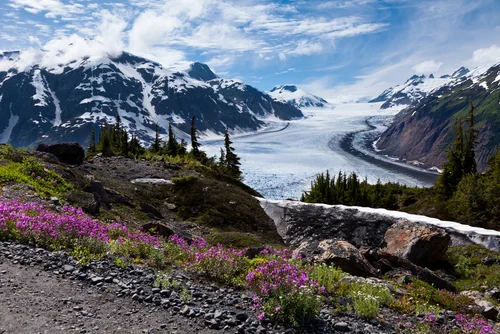
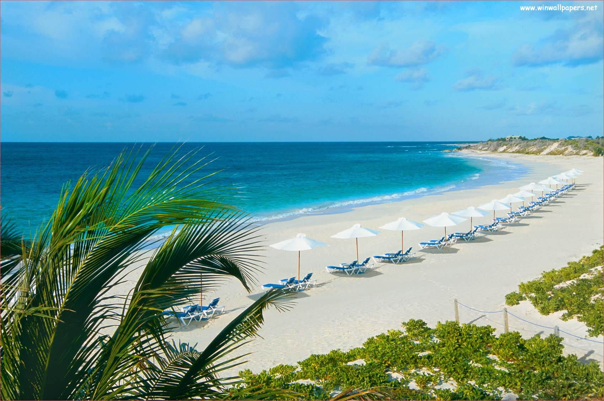

Stretching from the heart of the Apennines to the Adriatic Sea
on the peninsula's southeastern side, Abruzzo,
Italy has long been one of the country's
most overlooked destinations despite its unspoiled villages,
picturesque Trabocchi Coast,
and stunning natural escapes. Over the past
few years, however, it has gone from a sleepy
underdog to an ambitious harbinger of slow travel,
sustainable gastronomy, and conscious hospitality.
Villa Corallo, a 19th-century mansion near
Civitella del Tronto was transformed into a five-star
hotel in 2019. Dimore Montane, an eco-lodge
opened in 2020 in Majella National Park,
marries glamping with environmentally-friendly
facilities with a zero waste policy. Meanwhile,
restaurants like Bottega Culinaria in
San Vito Chietino and Materia Prima
in Castel di Sangro are redefining the region as one of
Italy's most exciting food hotspots for their
innovative and sustainable takes on local
produce and traditional
dishes (in case Niko Romito's three-Michelin-starred Reale wasn't enough).
With many international borders closed over the last two years, many eager U.S. travelers' eyes turned to Alaska. The vast state, famous for its towering, snow-capped peaks, pristine wilderness, massive national parks, and colorful locals, made for a dynamic destination with no passport required. But as borders reopen, interest in the 49th state is showing no signs of slowing down. Alaska's tourism board said early forecasts are projecting that more than 1.57 million cruise ship passengers could visit southeast Alaska in summer 2022. That's an 18% jump from 2019, the previous record year. Many perennial favorite cruise lines, like Holland America, will be returning to full strength after a non-existent 2020 and abbreviated 2021. Others, like Windstar Cruises, UnCruise, and Hurtigruten are rolling out fresh itineraries or are launching new ships. On dry land, Alaska is set to see myriad new offerings and events. In Juneau, the Sealaska Heritage Institute will open their Arts Campus (where visitors will be able to learn about Alaska Native art and culture) and will host Celebration, one of the largest gatherings of Indigenous peoples. In Anchorage, Fur Rendezvous, Alaska's oldest and largest winter festival, will be back from Feb. 25 to March 6 (which also happens to be peak aurora season). The event hosts activities like the Running of the Reindeer and the Outhouse Races, before culminating with the 50th running of the iconic Iditarod Trail Sled Dog Race.



This easy-going Caribbean gem is simpler than ever to get to with American Airlines launching the first-ever nonstop, direct flight from Miami on Dec. 11. Private charter flights by Tradewind Aviation have also resumed service to the island. And the just-opened Aurora Anguilla Resort & Golf Club has a fleet of jets to ferry guests from key U.S. cities. The sprawling luxury resort will include a few restaurants overseen by chef Abram Bissell, formerly of Eleven Madison Park, The NoMad, and The Modern. Quintessence, a boutique luxury resort with perks like butler service and a 4:1 staff-to-guest ratio, is opening a more affordable annex of suites called Quinn that will debut in 2022 (along with a Champagne cellar tasting room and Art Bar). New Restaurant Uchu at Belmond Cap Juluca is taking inspiration from Belmond's collection of properties in Peru. Named after the Quechuan word for spice, the menu will feature contemporary Peruvian cuisine inspired by three of the country's regions: the coast, the jungle, and the highlands.
As we ask ourselves what cities of the future should look like, we naturally look around for examples. Places like Shanghai, Tokyo, and New York City seem to fit the description on paper, but I'd argue that no city better encapsulates that definition than Doha, the capital of Qatar. There is so much to discover — from East-West/West-East, a series of four steel monoliths created by sculptor Richard Serra to the Museum of Islamic Art, the massive 560,000-square-foot gallery. Eat at Syrian comfort food spot Damasca One, Em Sherif a rooftop spot that serves up authentic regional dishes, and the lively corner restaurant Nourlaya Contemporary for Sri Lankan cuisine. Stay at the Mandarin Oriental Doha or Banyan Tree Doha. (Read Robinson's full dispatch on Doha in the July 2021 edition of Travel + Leisure) Qatar Tourism has launched a new international multi-media campaign to drive forward the country’s tourism goals and cement its ambition to welcome more than six million visitors a year by 2030. The campaign features nine unique, engaging key chain characters designed to introduce travellers to the destination, which will roll out across 15 international core markets.